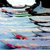
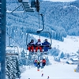
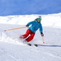

Basic Skiing Course - Gulmarg
Learn to Ski in 08 Days - For Absolute Beginners
Available Batches

Brief Description

Brief Itinerary
Detailed Itinerary
Day 1
Make your way from Srinagar to Gulmarg
Distance: 47 kms
Time Taken: 2-3 hours (based on traffic)
The Basic Skiing Course is held in Gulmarg: a place that is fondly referred to as the Skiing Capital of India. Travel from Srinagar to Gulmarg is not included in the course fee. If you would like to share the cost of this travel, please coordinate with your course mates in the whatsapp group we create a few days before the start date.
The drive from Srinagar to Gulmarg, although a short one, takes you through some scenic vistas of the countryside of Kashmir. You initially make your way through the city of Srinagar. Forty five minutes into the drive, houses lining either side of the road grow scant. The mountains in the backdrop become more visible. Snow, thanks to it being winters, is a constant throughout. 15 minutes later, you begin ascending a gentle slope.
This continues all the way up to Tangmarg. At Tangmarg, the road branches out into two- follow the path on the right for Gulmarg. From this point onward, it is a steady climb up hill. Tall, alpine trees gently sheathed in snow flank your left hand side and on the right; you get treated to yawning views of the valley below.
The presence of snow is more pronounced on the roads now. So, you move slower. It takes another half an hour to reach the resort in Gulmarg. After settling into your rooms, you will meet the rest of your course mates and instructors for the first time.
In the evening, your instructor will give you a brief of your Course Schedule for the next 8 days. The Gulmarg weather can range from sunny to white-out in the winters, with day time temperatures averaging around -5 degrees. So please make sure you bring proper clothing with enough warm layers to the Ski Site.
Day 2
Ski Fitting, Gliding and Side Stepping
Today is technically the first day of your skiing course. As with any new course, we will begin with the fundamentals. In skiing, this would mean getting familiar with the anatomy of your skiing equipment.
Read: Know Your Ski- A beginner’s Guide to the different parts of a Ski and the functions they serve
Next comes fitting of the skis. Your skiing equipment has three components: Ski Boots, Ski Poles and the Skis themselves. Bikat Adventures will be providing all of the equipment to you for the duration of the course.
Once you are familiar with the anatomy of a ski, we will walk you through the fitting process. Let’s begin with the Ski Boots. Your boots should leave almost no room for the foot to move around. You should be able to wiggle your toes. But the calf and ankle should be largely immobile from side-to-side movement when strapped shut.
Next comes attaching the boots to your skis. The bindings are made on the ski so that the heel cup is adjustable and can be slid forward and backward along a track to fit your boot. This can be done pushing a small silver adjustor at the back. The track will have incremental measurements on it - ensure that they are the same on both skis when done with your fitting.
To attach your boot, place the toe of your boot in the centre of the toe cup, and then give a strong downward push with your heel into the heel cup until you feel it latch and hear a ‘click.’ If you are having trouble attaching the heel, slide the heel cup back on the track a notch or two until your boot clicks in firmly.
Don’t worry if most of what we are talking about above sounds unfamiliar. We will be assisting you through every step during the Basic Skiing Course.
The last thing your instructor will show you while fitting gear is the proper way to grip your ski poles - with the strap wrapped around your wrist and firmly held between your fist and the pole. The strap should emerge through the underside of your fist, not descend from the top.
Once the gear is chosen, you will be taught how to put it on correctly to make sure that you are safe and secure.
Read: How to comfortably wear your ski boots and skis? A Step by Step Guide for Beginners
Now that the theory and attiring is done, it is time for your first practical lesson- gliding down the snow on your Skis. This is when you test what it feels like to be on the skis for the first time.
Your instructor will find a soft slope to try this out. Once you are at the top of the slope, give yourself a gentle push down the slope on your skis and try to hold your balance until you reach the end.
Now it is time to make your way to the top of the slope again to your instructor. Removing your skis every single time to climb up the slope can be a cumbersome process.
This is where your next lesson in Skiing is taught- Side Stepping. This technique is used to ascend an incline on your skis. In this technique, you place your skis perpendicular to the slope and use the edge of each ski facing the slope to push you up. After you’ve placed the outer edge of your upper ski into the incline, take your lower boot and bring it in to meet your upper foot, pushing the inner edge of the ski into the snow instead. Repeat the steps until you reach the top.
Read: How to Climb Uphill on your Skis?
Once you are at the top of the slope, glide down once again. Practice many more times until you feel comfortable with your equipment.
Day 3
Controlled Fall and Snow Ploughing
Today, you will be heading to the Baby slope of Gulmarg to continue your skiing lesson. Gulmarg has a total of 5 slopes. Three of these slopes (Baby Slope, Highland Park Slope and Slope 85) are for beginners.
Baby slope, as the name suggests, is for absolute beginners who have never skied before. The Highland Park Slope is steeper and slightly longer than the Baby Slope. Slope 85, in contrast, is quite short but dauntingly steep.
The fourth slope, Phase 1, is for intermediate skiers. It is a 4 km long run which starts at around 10,000 ft and ends at the base station at about 7,000 ft. Although Phase 1 is a groomed slope, it has several steep sections making it fun to practice on.
The final and fifth slope is Phase 2. Ungroomed and full of deep powder, Phase 2 is for advanced skiers only. This area is avalanche controlled and is patrolled by the Gulmarg Ski Patrol.
During your Basic Skiing Course, you will ski on four of the five slopes (Baby Slope, Highland Park Slope, Slope 85 and Phase 1).
Today, our lesson begins on the Baby Slope, about 25% up the slope (not all the way from the top).
We will be learning controlled falls. Before skiing down the slopes, you need to know how to control your fall when you lose your balance. There is a reason why skiing is touted as the second best thing to flying. You are in for some serious speed (and injury) if you don’t learn to control your skis.
So that is what your day will begin with- gliding first, falling down purposefully and using the techniques taught to arrest your fall/slide down the slope.
This will be followed by your first real technique/lesson in skiing which is the snowplough! Essentially, this is how you control your speed and brake as a beginner. You sit with your weight centred between the two skis, the nose of each ski pointed in toward each other in a wide A-frame, and gently push off with your poles.
The goal is to practice control. We don’t want speed right now- just enough to keep you moving slowly down the slope in a straight line. It’s okay to fall. You probably will… multiple times. If you ever feel you are losing control and speeding up unintentionally, try widening your snowplough and lean your bodyweight forward, your shins using your boots to lean against fully. The inner edge of each ski should be slightly angled into the snow for additional control.
If you are still unable to control your speed (which is likely to happen during the initial runs until you gain a better hang of the technique), break your movement down the slope by using the controlled fall method.
After a couple of runs, we will climb up halfway up the baby slope to practice snow-plough once again. After lunch, we will begin right from the top of the Baby slope and ski down its full length using the snow plough technique.
This will continue till 4 or 5 in the evening. You are likely to feel wiped out by the end of the day. Take some rest once you go back to your resort. You have earned it. Freshen up and explore Gulmarg later in the evening if you feel like it.
Day 4
Stem Turns and Parallel Skiing
Snowplough turns prepare you with the technique and confidence that you need to begin stem turns and eventually parallel turns when your control, balance and confidence with speed has increased. In the morning, we will begin with practicing snow plough and snow plough turns. Your instructor will introduce you to stem turns post lunch on the Baby Slope.
Stem turns are a hybrid between the snow plough and parallel turns. Since the skis in snowplough position will naturally act to slow you down, parallel skis help you to accelerate. On a stem turn, you begin cutting across the slope with parallel skis, shifting into snowplough when it is time to turn and push the appropriate foot into the snow. Once the turn is complete and you are moving back across the slope, you resume the parallel position once again.
Every time you are in parallel position, you will notice that your skis pick up speed. Training from the previous days will make you instinctively shift to snow plough to slow down. Resist the urge. Maintain the parallel position until you want to turn. Switch to snow plough only during the turn.
Once you master this, you are only a step away from parallel skiing!
Day 5
Advancing to the Highland Park Slope and Slope 85
Today is a going to be a challenging day. We advance to the Highland Park Slope and Slope 85.
In the morning, you will try to traverse down the Highland slope using a mix of snow plough and snow plough turns. The focus during the first few tries is to maintain your balance and get used to terrain of the Highland Slope. Remember, the Highland Slope is steeper, longer and trickier to navigate than the Baby Slope.
During the first few tries, we have had skiers tell us that they have lost all the skills they picked up the previous day. If you find yourself feeling the same way, do not let it dishearten you. The key is to keep trying. It takes time and practice to get used to the terrain. By afternoon, you will find yourself feeling more confident on the Highland Park Slope.
Post lunch, we will shift to Slope 85 and practice a couple of runs there until evening. Go back to your resort afterwards and rest for the night. Tomorrow is going to be a BIG DAY.
Day 6
Advancing to Phase 1 of the Slope (Gondola to the top of Phase 1)
Today is hands down the MOST THRILING DAY of your Basic Skiing Course. You advance to Phase 1.
Phase 1 is meant for intermediate skiers. This is where you put all the skiing skills you had picked up over the last week to test. Phase 1 is a 4 km long run. So, you are going to need all your energy and willpower to finish strong on this day.
After a healthy and nourishing breakfast, we will take the gondola to the top of Phase 1 (tickets are a part of the course fee).The anticipation starts building from the moment the Gondola starts climbing up the ropeway. It is a beautiful ride. Observe the fresh snow on the slopes of Phase 1 below you. Alpine trees and gujjar huts mark sections of the slope. Phase 1 starts at around 10,000 ft and ends at the base station at 7,000 ft. Although Phase 1 is a groomed slope, it has several steep sections making it a fun stretchto practice on.
The terrain, you will notice, is strikingly different from the beginner slopes of Gulmarg. Sections of rock, gravel and soil with mounds of hard and soft snow mark the slopes here, making skiing on it extremely challenging. Expect to fall plenty of times along the way.
Once you complete Phase 1, you can go back for a second round. Alternatively, you can also take the Gondola from Phase 1 (10,000 ft) to Phase 2 (14,000 ft). Phase 2 takes you to the top of the Apharwat Peak. The views here are breathtakingly beautiful.
That said, Phase 1 to Phase 2 involves quite a bit of an altitude gain. It is not uncommon to feel the effects of the altitude here.
Day 7
Gondola to the top of Phase 1, Skiing Course Assessment, Certification and Medal Distribution
Today is the day when you put your skills to test, literally. It is time to assess your skiing skills. Your instructor will test you on your knowledge of skiing (theory + practical) and grade you for the certification. Expect to be tested on snow plough, snow plough turns, side stepping, and stem turns with parallel skiing.We will use the morning to brush up on our skills with a practice run from Phase 1.
This will be followed by a competition- a mini slalom style race- held on a slope chosen by your instructor. During the competition, you will be evaluated on three factors: speed, technique and control.
After the competition, there will be a closing ceremony where certificates and badges will be distributed.
After the closing ceremony, we will take a Gondola to the top of Phase 1. Practice for a while and come back skiing down phase 1 and back to the hotel.
Day 8
Depart from Gulmarg
Distance: 47 kms
Time Taken: 2-3 hours (based on traffic)
It is now time to bid adieu. There is no skiing today- only a resolution promising and hoping to return again for the Intermediate Skiing Course. The sport, you will come to realise, is addictive. You will find yourself wishing you could extend your holiday to stay back and learn some more.
The cost of travel from Gulmarg to Srinagar is not included in the course fee. After breakfast, you can start your journey to Srinagar. If the timings are planned well, you could maybe catch a peaceful shikhara ride in Srinagar before you board your transport back home :)
What's Included
- Ski Equipment for 6 days (Skis, Ski boots, Ski poles, Helmets)
- Ski instructor for 6 days
- Gondola ski day passes for 2 days
- Ski bar passes
- Ski competition
- Bikat Course certificates for all students
What's Not Included
- Any portage services on the slopes
- Any expenses of a personal nature
- Travel or Adventure Insurance
- Anything not specifically mentioned in Inclusions
- Gloves and personal woolen clothes
Are you Eligible for this Adventure?

BRS Level Required
Skiing demands physical stamina. Each day, you will be actively skiing down slopes and climbing up while carrying your skis. A strong core and good fitness are mandatory to keep up with the demands of this course.
While prior skiing experience is not mandatory, it is beneficial to be physically prepared. As a benchmark, you should be able to jog 5 kilometres in under 35 minutes. This ensures that you have a certain level of cardiovascular fitness required for the course. Adding some resistance based workouts into this can ensure you complete the course comfortably and enjoyably.
If you do not know what level of BRS trek would suit you best, worry not! Fill out this Form:

we will send you a progression chart to help you comfortably get out of your comfort zone in order to level up and ultimately reach your highest potential in the big, bad world of outdoor adventure.
Packing List
- Ski Socks (Knee length)
- Ski Pants (any outdoor waterproof pants will do)
- Windproof jacket
- Gloves (waterproof with a warm layer inside)
- Sunglasses / Ski Goggles
- Neck Gaiter
- Warm Cap
- 3 sets of Quick Dry T shirts
- 2 pairs of Quick Dry Pants
- Thermals
- Toiletries
If you are new to skiing and are wondering how to attire for your upcoming skiing course, then this article is for you. It lays out the basics of what you will need to keep yourself protected from the cold and the harsh sun. How to Attire for your Basic Skiing Course - Essentials for Beginners
Frequently Asked Questions
The Basic Skiing Course introduces beginners to the exciting and adventure-filled world of Skiing on the stunning ski slopes of Gulmarg. This course is for anyone who wishes to learn and master the art of skiing.
If you can Jog/Run for 5 kms in 30-35 mins, you are ready to take on this activity. Adding some resistance based workouts into this can ensure you complete the course comfortably and enjoyably.
If you cannot do the above, there’s no need to worry. It is important to remember that it’s all about practice. Get on a training schedule and we can assure you that you will meet these standards in a matter of a few months.
Since this is a basic skiing course, no skills are required as such. Throughout the course, you’ll be taught the ABCs of Skiing by our team of expert and certified instructors.
The Basic Skiing Course is held in Gulmarg: a place that is fondly referred to as the Skiing Capital of India.
Apart from learning a whole new skill and sport, the location of the course is a major highlight in itself. The stunning backdrop of Gulmarg; nestled amidst the breathtaking beauty of the Himalayan mountains, this place is straight out of a winter wonderland fairytale. Majestic peaks, glistening snow, and an atmosphere charged with adventure await you at every turn. With one of the highest ski lifts in the world and slopes that will leave you breathless, this is a playground where you can unleash your inner adrenaline junkie. Whether you're a complete beginner or have a bit of experience under your belt, Gulmarg has the perfect terrain to suit your skill level.
The weather conditions here can be unpredictable, the temperature goes down to -15 degrees; it may be challenging to adapt to the cold and stay warm while learning to ski. Maintaining balance and coordination while skiing can be another challenge for beginners. Skiing involves using muscles and movements that might be unfamiliar, leading to falls and difficulty in controlling speed. But these are all just part of learning a new skill - nothing to lose sleep over!
The skiing course happens in the months of January to March when there is ample snow and the snow conditions provide perfect slopes for practising the sport.
During the course, you will be accommodated in hotels on a twin/triple sharing basis.
The skiing course will happen in the months of January to March when the temperatures will drop to as low as -15 deg Celsius and will see an ample amount of fresh snow and snowfall. Daytime temperature varies from -4 to 2 degrees Celsius. During the night, the temperature can dip to -15 degrees Celsius but we stay in heated rooms to stay warm.
Skiing is a technical skill which involves handling equipment suited for the sport. However, the point of the course is exactly this - to get you comfortable with and provide practice using these technical gears. You don’t need any prior technical skills in order to join the course.
To get to Srinagar:
By Air: There are multiple flights daily directly from Delhi to Srinagar, or connecting flights from all major cities. By air is the easiest way to reach Srinagar.
By Rail: The National railway station to reach Srinagar is Jammu Tawi, from where Srinagar is 270 km away. Another railway station is Udhampur, from where Srinagar is 183 km away. There are multiple trains from Delhi and Chandigarh to Jammu Tawi. From Jammu, you can make the road journey to Srinagar either via private or state run buses or private taxi.
By Road: The road distance from Delhi to Srinagar is 800 kms if you are taking a taxi or driving down in a private vehicle. Direct buses to Srinagar are available from Jammu.
All major networks have coverage in Gulmarg. However, all outstation prepaid connections do not work in J&K. You will need either a postpaid connection or a local prepaid connection.
You’ll find ATMs in Gulmarg, but it's advised to carry enough cash with you.
Transportation facilities are not provided for this activity.
Transportation facilities are not provided for this activity.
Dal Lake: The jewel of Srinagar, the Dal lake is synonymous to a visit to Srinagar and almost a visual definition to the town. Spread over a straggling 26 sq.kms, it is the most photogenic stretch of this paradise on earth and undoubtedly also one of the most sought after of attractions.
Mughal Gardens: Built in the Mughal era, donning its majestic architecture, are the Mughal gardens. The garden is a combination of the Nishat Bagh, Shalimar Gardens & Chashm-e-Shahi. The most prominent feature of the gardens is its long stretches of cascading fountains making this a must see for every traveller.
Nishant Bagh: Laid out in 1633, Nishant Bagh is fondly known as the Garden of Joy. Its beauty is enhanced by the well-manicured landscapes, long avenues of Chinar & cypress trees, rare flowering plants, 12 terraces & several bubbling fountains that cover the whole expanse of the garden.
Shankaracharya Temple: Visit this effulgent, age old temple in Srinagar to feel closer to the gods. Situated at a height of about 1100 feet on the south-east of the city, this sacred temple offers splendid views of the valley and snow-clad mountains of the Pir Panjal range.
Hazratbal: Hazratbal Mosque, situated on the western shore of the pristine Dal Lake, is a sacred Muslim shrine in Hazratbal. Hazratbal's significance is derived from the fact that it houses an heir of the prophet Muhammad, a relic, titled Moi-e-Muqqadas. The relic is only displayed to the public on religious occasions, usually accompanied by colourful fairs afterwards. The shrine commands a grand view of the lake and the mountain beyond, especially when its pristine white marble elegance is reflected in the waters of the lake.
You will be provided with all the equipment needed for the skiing course - skis, ski poles, helmets, ski boots. If you have ski equipment of your own then you can carry the same for the course.
You can rent a fleece jacket, and a rucksack from us. In case you have any other requirements, you can talk to our representative and we will be happy to assist you in any way that we can.
You will receive your rented equipment at Gulmarg, on Day 1.
Our instructors will collect the rented equipment from you at the end of the course on the last day.
For a detailed list, check the Packing List section on this page.
You can buy your essentials in Srinagar. However, it is advised to not leave anything for last-minute purchases.
As we’ll be staying in hotels, you’ll have proper toilet facilities.
In case you get your period during the course and don’t have sanitary napkins, our instructors can provide them to you. If you need any other kind of assistance, you can let our instructors know. Irrespective of gender, our team is gender sensitised and equipped to assist you in any way you need them to.
Since we will be staying in hotels, you will have access to electricity. It is, however, advised to carry power back-up in case of power cuts.
A copy of your ID Proof (Aadhar card or any other government ID) and Medical Certificate are the mandatory documents required for this course. (Soft copies for all of these are to be sent to us & originals should be on your person during the course.)
Yes, insurance for any high-altitude activity is highly recommended to cover the cost of any emergency service required as well as to cover for medical cost in case of injury or illness during the activity. You can buy it on your own. Alternatively, if you want us to buy it on your behalf, you can speak to our post-booking team and they will arrange it for you. They will send you a payment link once the insurance has been purchased.
Yes, there are multiple permits required for this. We obtain the permits on every participant’s behalf. All the permit costs are included in your course fee.
Participants in our ski courses will be provided with a Certificate of Participation, Graduation and merit certificate with grades A/B/C to those who complete all lessons and pass the tests as well as a Certificate from J&K tourism.
On completion of the course, the certificate will show up on your dashboard on our website. You can download it directly from there.
Gulmarg is in India. If you are coming from outside, you will need a visa to enter the country. You should be able to find the rules for obtaining a Visa based on your home country on the internet. This information is easily available.
This does not apply to you if you are an Indian citizen. In case you don’t hold an Indian passport, you will need to check online for Visa application rules based on your home country.
If you are not an Indian citizen, you will need Travel Medical Insurance to travel to the country. Please make sure that your insurance policy is valid for the altitude you are going to and the activity you are undertaking, to cover risks during the activity. The insurance policy provided by Bikat Adventures does not cover foreign nationals. So, please do not purchase it while making the booking from our website.
Basic Skiing Course - Gulmarg is located in Kashmir Himalayas. The Himalayas house the tallest mountains in the world and have long been a treasure trove for all adventure enthusiasts. The slopes of Gulmarg are perfect for all levels of skiing, from amateur to experts. It also has established safety measures since it is a hub for sports like skiing making it a safe place for a beginner.
You can make the booking any time depending on availability of slots in our batches. You will get this information at the top of this page.
It absolutely is. We recognize, value and embody the ideology that the world of outdoor adventure can benefit from diversity. We make it our mission to create outdoor spaces as equally accessible and safe for all genders as possible. We also encourage women leaders in the outdoors and all of our staff (irrespective of gender) is gender sensitised. As for accommodation, in case there are no other women, a solo female participant is provided with a separate single-occupancy room.
Our batch sizes for Basic Skiing Course are capped at 12 with the participant to instructor ratio of 2:1.
All the gear used during the course are tried and tested, maintained for good quality and is overall top notch in quality and condition. We are continually looking to obtain the best of everything there is in the market so as to ensure optimum safety.
That will depend on the nature of your medical condition. Do give us a call, and one of our people will help you understand what is best for you. If not this, we are sure there would be plenty of other options you can choose from our vast portfolio to pick as your next adventure.
On making the payment, you will receive a booking confirmation along with the packing list and a copy of the undertaking form via email. You will subsequently receive emails detailing documents required, how to prepare physically and mentally for this course, information on pick-up location on the first day etc. Please add [email protected] in your trusted emails list to make sure our emails don't go to your spam folder.
A Whatsapp group will be formed a few weeks before the start of the course. Members from our team are on those groups as well. Feel free to seek any clarifications you require in regards to the activity, on the group itself. Updates related to transportation/pickup point/pickup timing, accommodation etc. will be shared on the Whatsapp group as well.
Yes, we create a Whatsapp group a few weeks before the start date so that the flow of information remains smooth and transparent.
Yes, it is one of the mandatory documents you will need to submit before the course starts. The soft copy is to be sent to us & the original should be on your person during the course.
Yes, we will provide you an undertaking form through email which will need to be filled up by you and submitted to us post booking.
Why Bikat?

Personalised Experience
3:1 Participant to Instructor ratio

Certified equipment
State of the art certified equipment that will see you through your entire course

Certified Instructors
Learn from highly skilled and certified instructors who are passionate about skiing

Safety
Our impeccable track record ensures you are in safe hands throughout the course

Expertise
Capability to Run trips in remote and difficult regions
Eco-sensitive approach
We conduct out courses in an eco-friendly manner
Team
Very competent, committed and cohesive team
What our customers Say


Cancellation Policy
Cash refund
Cancellations up to 30 days prior to departure date
Cancellations between 30 days to 15 days prior to departure date
Cancellations within 15 days prior to departure date
Voucher refund
Cancellations up to 5 days prior to departure date
Cancellations within 5 days prior to departure date
Please Note:
- Cash refund is applicable only in case of bookings made without using any promotional offer code or vouchers. "Cash Refund will be processed in 7-14 working days."
- This is only a brief of cancellation terms. For finer details please refer Detailed Cancellation Policy.
Blog Posts

know how
This article is a detailed step by step guide on how to wear and remove your Ski Boots and Skis.
While this is a fairly straightforward process, there are little nuances to wearing your boots and skis which when ignored could turn it into an ordeal ...
Read full

Informative
So you’re interested in skiing in India, huh? The Himalayas have some of the most stunning ski resorts in the world, but Gulmarg, Kashmir is by far the top choice for a skier’s paradise, and we are pumped that you’re interested in j...
Read full

know how
There are many ways of climbing uphill on your skis. Broadly speaking, these are classified into two categories: Gliding techniques and non-gliding techniques.
In the Basic Skiing Course, we will be learning the non-gliding techniques:
1. Side...
Read full

Informative
So you’ve decided you want to trade your hiking boots out for some skis. Good choice.
Turns out, skis were used even before the 18th century as a way for Scandinavian farmers, hunters and warriors to get around a little easier in the snow, and...
Read full

know how
If you are new to skiing and are wondering how to attire for your upcoming skiing course, then this article is for you. It lays out the basics of what you will need to keep yourself protected from the cold and the harsh sun.
Ski Socks:
This...
Read full

Informative
Hey there, ski enthusiast! Are you dreaming of gliding down snow-covered slopes in one of the most picturesque locations on the planet? If so, then this is the article for you! We'll be taking you on a journey to the enchanting world of skiing in Gul...
Read full

Experiential
This blog is a little different from our other ones. It was written jointly by members of our Exploration Team, Sarthak and Cambria, each with their own voice and perspective on their adventure to Gulmarg, Kashmir to pilot Bikat’s new beginners...
Read full

know how
Did you know Skiing or traveling over snow on skis has a history of over eight millennia? Since then, skiing has evolved from being a purely utilitarian activity to one of recreational activity and sport.
The word “Ski” (derived from the...
Read full
Similar Adventures

Introduction to Skiing
Get Introduced to Ski in 5 Days - For Absolute Beginners
Kashmir
5 days
BRS 3
3780 m

Intermediate Skiing Course - Gulmarg
Kashmir
08 Days
BRS 5
4000 m

Advance Skiing Course - Gulmarg
Kashmir
8 Days
BRS 6
4300 m


{kind=link}
{kind=link}
{kind=link}
{kind=link}
{kind=link}
{kind=link}
{kind=link}
{kind=link}
{kind=link}
{kind=link}
{kind=link}
{kind=link}
{kind=link}
{kind=link}
{kind=link}
{kind=link}